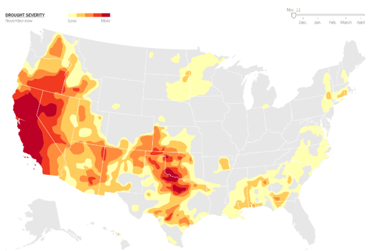

Global Heat Map Events By Year
michael write here
Type of Injury by year
The maximum number of Fatal injuries have been recorded at 1074 in 2003 during the period 2000 to 2019. Observing the graph
(red color) the number of fatal injuries per year pass 500. In 2000 the data recorded is limited. Serious Injuries maximum
recording is 472 in 2003 and in average pass 200 per year. Similarly, 2003 achieved the maximum number of Minor Injuries.
The two major events in 2003 were:
- 25 December – UTA Flight 141, a severely overloaded chartered Boeing 727–223, fails to become airborne during its takeoff
attempt from Cadjehoun Airport in Cotonou, Benin. It runs off the end of the runway and crashes on a beach along the Bight
of Benin, killing 151 of the 163 people on board. All 12 survivors as well as two people on the ground are injured.
- 8 July – Sudan Airways Flight 139, a Boeing 737-200, crashes at Port Sudan, Sudan, killing 116 of the 117 people on board.
A two-year-old boy is the only survivor.